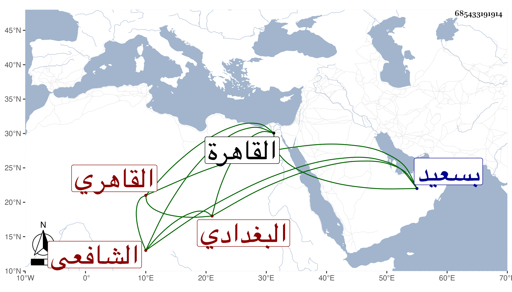

0902Sakhawi.DawLamic.ITO20230111-ara1.EIS1600.685433191914
Biography ID: 685433191914
537
عبد الصمد بن محمد بن محمد بن محمد بن أبي بكر الزين أبو الخير بن الشمس بن سعد الدين بن النجم البغدادي الأصل القاهري الشافعي الآتي أبوه ويعرف كأبيه بالزركشي . ولد كما ضبطه له والده لست خلون من ربيع الآخر سنة تسعين وسبعمائة بالقاهرة ونشأ بها وأحضر في الرابعة على التنوخي ثلاثيات البخاري والخيرة في القراءات العشرة لابن زريق وغير ذلك ثم سمع على الحلاوي والشرف بن الكويك ومما سمعه على أولهما من مسند أحمد بقراءة شيخنا وكذا سمع على أبي الفرج بن الشيخة ، وأجاز له الشريف الشهاب أحمد ابن علي الحسيني وأبو حفص البالسي وابن منيع والكمال أحمد بن علي بن عبد الحق ومحمد بن أبي هريرة بن الذهبي وعبد القادر بن محمد بن علي سبط الذهبي وخديجة ابنة ابن سلطان وفاطمة ابنة المنجا وفاطمة ابنة ابن عبد الهادي وأختها عائشة وآخرون ، وحدث باليسير سمع منه الفضلاء قرأت عليه السنن للشافعي رواية المزني وغير ذلك وكان خيرا ساكنا لين الجانب نيرا صوفيا بسعيد السعداء بل أظنه كان امامها وقد كانت وظيفة أبيه قبله . مات في ربيع الآخر سنة سبع وستين رحمه الله وإيانا .
